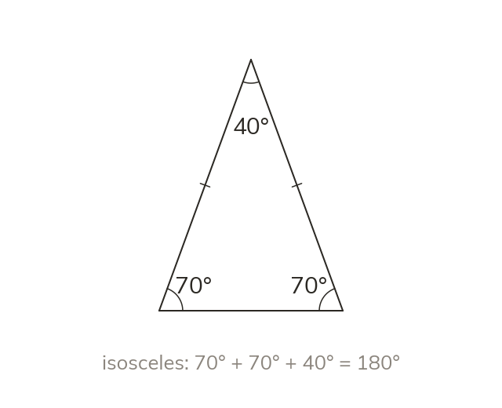

Triangle types and the angle sum
Angles in a triangle always sum to 180°. An isosceles triangle has equal angles opposite its two equal sides. An equilateral triangle has three 60° angles.
Angles in a triangle always sum to 180°. An equilateral triangle has three equal sides and three 60° angles; an isosceles triangle has two equal sides, and the two angles opposite those equal sides are also equal; a scalene triangle has no equal sides or angles. A right-angled triangle has one 90° angle, so its other two angles sum to 90.